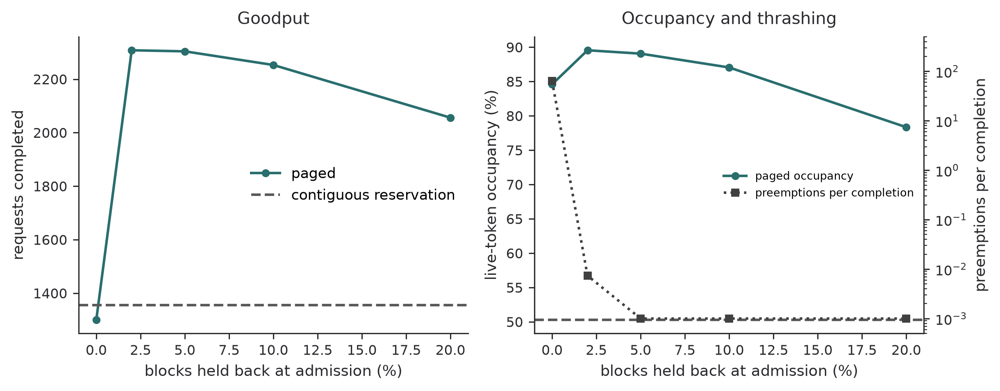

from dataclasses import dataclass, field
from math import ceil
@dataclass
class Request:
request_id: int
prompt_tokens: int
max_tokens: int
generated: int = 0
blocks: list[int] = field(default_factory=list)
@property
def live_tokens(self):
return self.prompt_tokens + self.generated
class PagedAllocator:
def __init__(self, block_count: int, block_tokens: int = 16):
self.block_tokens = block_tokens
self.free = list(range(block_count))
def ensure_capacity(self, request: Request):
required = ceil(request.live_tokens / self.block_tokens)
missing = required - len(request.blocks)
if missing > len(self.free):
raise MemoryError("KV cache exhausted")
for _ in range(missing):
request.blocks.append(self.free.pop())
def release(self, request: Request):
self.free.extend(request.blocks)
request.blocks.clear()A Paged KV-Cache Allocator, Built from First Principles
LLM Serving
Memory Management
Python
An executable simulator for contiguous and paged KV-cache allocation, including fragmentation, copy-on-write, and capacity analysis.
Overview
Autoregressive decoding reuses the keys and values of every previous token. Caching them avoids a full prefix recomputation, but turns serving capacity into a memory-allocation problem: request lengths are unknown, sequences arrive and finish at different times, and branching decoders share long prefixes.
This project builds a small simulator for two allocation policies:
- Contiguous reservation: reserve each request’s declared maximum length.
- Paged allocation: allocate fixed-size token blocks only when needed.
The model is intentionally compact. It does not benchmark a GPU kernel. It isolates the allocator mechanism behind PagedAttention and vLLM (Kwon et al. 2023).
Cache size
For a decoder with L layers, h_{kv} key/value heads, head dimension d_h, element size b bytes, and T cached tokens, the cache occupies
B_{KV}=2Lh_{kv}d_hTb. \tag{1}
The factor two accounts for keys and values. For conventional multi-head attention, h_{kv} equals the query-head count. Multi-query and grouped-query attention reduce h_{kv}, which directly reduces the persistent cache.
It is more useful to read Equation 1 as a per-token rate than as a total. Differentiating with respect to T gives 2Lh_{kv}d_hb bytes for every token generated, a figure fixed at model-design time:
| Decoder shape | Bytes per cached token | Tokens per GiB | 8K-token request |
|---|---|---|---|
| 32 layers, 32 KV heads, d_h=128 | 512 KiB | 2,048 | 4.0 GiB |
| 32 layers, 8 KV heads, d_h=128 | 128 KiB | 8,192 | 1.0 GiB |
| 80 layers, 8 KV heads, d_h=128 | 320 KiB | 3,277 | 2.5 GiB |
The middle row is the reason grouped-query attention is now standard: a four-fold reduction in h_{kv} turns a 4 GiB request into a 1 GiB request with no change to the allocator. The third row is the reason depth is not free at serving time, since layers multiply the cache just as heads do.
The consequence for scheduling is that cache capacity, not FLOPs, sets the concurrency limit. On an 80 GiB device holding a 140 GiB-class model across two shards, perhaps 20 GiB remains for cache. At the first row’s rate that is five concurrent 8K requests; at the second row’s rate it is twenty. Equation Equation 1 is linear in context length and batch size, which is far better than a quadratic attention matrix, but it is persistent rather than transient, and it is allocated and freed at token granularity by requests whose final length nobody knows in advance. That combination, not the size itself, is what makes it an allocator problem.
Allocation model
A contiguous allocator needs one extent large enough for the request. Reserving the declared maximum avoids relocation while decoding, but unused future slots waste memory. Variable extents also create external fragmentation.
A paged allocator divides the cache into equal physical blocks. Each request owns a logical block table:
\text{logical block }j\longmapsto\text{physical block }\pi_r(j).
The attention kernel follows this mapping when reading keys and values. Since physical blocks have equal size, they can be taken from a free list and need not be adjacent.
Only the final block of a request can be partially empty. If the block contains B token slots, internal waste is bounded by B-1 slots per live sequence, independent of maximum generation length.
A workload experiment
The following experiment samples 2,000 concurrent requests. Prompt lengths follow a log-normal distribution, maximum generation budgets are deliberately conservative, and actual completions vary. The comparison measures reserved token slots rather than allocator metadata.
import numpy as np
import matplotlib.pyplot as plt
plt.style.use("../../eigenholm.mplstyle")
rng = np.random.default_rng(11)
requests = 2_000
prompt = np.clip(rng.lognormal(mean=5.2, sigma=0.8, size=requests).astype(int), 16, 4096)
budget = rng.choice([128, 256, 512, 1024], size=requests, p=[0.2, 0.35, 0.3, 0.15])
actual = np.array([rng.integers(1, limit + 1) for limit in budget])
live = prompt + actual
block_sizes = np.array([8, 16, 32, 64, 128])
contiguous_reserved = prompt + budget
contiguous_efficiency = live.sum() / contiguous_reserved.sum()
paged_efficiency = np.array([
live.sum() / (np.ceil(live / block) * block).sum()
for block in block_sizes
])Plotting code
fig, ax = plt.subplots(figsize=(7, 3.7))
ax.plot(block_sizes, 100 * paged_efficiency, "o-", label="paged")
ax.axhline(100 * contiguous_efficiency, color="0.35", ls="--",
label="contiguous reservation")
ax.set(xlabel="block size (token slots)", ylabel="live-token efficiency (%)", ylim=(0, 102))
ax.legend()
plt.show()
These values are simulator outputs, not measurements from the vLLM paper. The qualitative trade-off is real: smaller blocks reduce internal fragmentation but increase block-table entries and kernel address-translation work.
Allocation under load
The static comparison above measures a snapshot. It cannot show the failure mode that matters in a serving engine, because that failure mode is temporal: paged allocation lets the scheduler admit a request whose future memory demand has not been reserved. Every admitted request then grows by one block every B decode steps, and the growth is not cancellable. If the cache fills, some request must be evicted and its work discarded.
The following experiment closes that loop. Requests arrive as a Poisson process, each decode step advances every running request by one token, and admission is greedy under whatever capacity the policy exposes. The paged policy takes one extra parameter: an admission watermark, a fraction of blocks held back so that already-running requests have room to grow.
CAPACITY, BLOCK, STEPS, WARMUP = 60_000, 16, 4000, 500
def simulate(policy, watermark=0.0, arrival_rate=0.6, seed=5):
rng = np.random.default_rng(seed)
allocator = PagedAllocator(CAPACITY // BLOCK, BLOCK)
floor = int(watermark * len(allocator.free))
reserved, next_id, completed, preemptions = 0, 0, 0, 0
running, queue, target = [], [], {}
concurrency, occupancy = [], []
for _ in range(STEPS):
for _ in range(rng.poisson(arrival_rate)):
prompt = int(np.clip(rng.lognormal(5.0, 0.8), 16, 2048))
budget = int(rng.choice([128, 256, 512, 1024], p=[0.2, 0.35, 0.3, 0.15]))
queue.append(Request(next_id, prompt, budget))
target[next_id] = int(rng.integers(1, budget + 1))
next_id += 1
while queue: # greedy admission
head = queue[0]
if policy == "contiguous":
need = head.prompt_tokens + head.max_tokens
if reserved + need > CAPACITY:
break
reserved += need
else:
if ceil(head.live_tokens / BLOCK) > len(allocator.free) - floor:
break
allocator.ensure_capacity(head)
running.append(queue.pop(0))
done, evicted = [], []
for r in running: # one decode step each
r.generated += 1
if policy == "paged":
try:
allocator.ensure_capacity(r)
except MemoryError:
r.generated -= 1
evicted.append(r)
continue
if r.generated >= target[r.request_id]:
done.append(r)
for r in done + evicted:
running.remove(r)
if policy == "paged":
allocator.release(r)
else:
reserved -= r.prompt_tokens + r.max_tokens
completed += len(done)
for r in evicted: # recompute from the prompt
preemptions += 1
r.generated = 0
queue.insert(0, r)
concurrency.append(len(running))
occupancy.append(sum(r.live_tokens for r in running) / CAPACITY)
return dict(completed=completed, preemptions=preemptions, queued=len(queue),
concurrency=np.mean(concurrency[WARMUP:]),
occupancy=np.mean(occupancy[WARMUP:]))
baseline = simulate("contiguous")
watermarks = [0.0, 0.02, 0.05, 0.10, 0.20]
runs = [simulate("paged", w) for w in watermarks]
completed = np.array([r["completed"] for r in runs])
occupancy = np.array([r["occupancy"] for r in runs])
thrash = np.array([r["preemptions"] / max(r["completed"], 1) for r in runs])
pct = 100 * np.array(watermarks)Plotting code
fig, axes = plt.subplots(1, 2, figsize=(8.8, 3.5))
axes[0].plot(pct, completed, "o-", label="paged")
axes[0].axhline(baseline["completed"], color="0.35", ls="--",
label="contiguous reservation")
axes[0].set(xlabel="blocks held back at admission (%)",
ylabel="requests completed", title="Goodput")
axes[0].legend()
occupancy_line, = axes[1].plot(pct, 100 * occupancy, "o-", label="paged occupancy")
axes[1].axhline(100 * baseline["occupancy"], color="0.35", ls="--",
label="contiguous occupancy")
axes[1].set(xlabel="blocks held back at admission (%)",
ylabel="live-token occupancy (%)", title="Occupancy and thrashing")
thrash_axis = axes[1].twinx()
thrash_line, = thrash_axis.semilogy(pct, np.maximum(thrash, 1e-3), "s:", color="0.25",
label="preemptions per completion")
thrash_axis.set(ylabel="preemptions per completion", ylim=(5e-4, 5e2))
thrash_axis.spines["right"].set_visible(True) # this panel does use a second y axis
axes[1].legend(handles=[occupancy_line, thrash_line], fontsize=7,
loc="center right")
plt.show()
print(f"contiguous: {baseline['completed']} completed, "
f"{baseline['concurrency']:.0f} concurrent, "
f"{100 * baseline['occupancy']:.0f}% occupancy, {baseline['queued']} queued")
for w, r in zip(watermarks, runs):
print(f"paged @ {100 * w:4.0f}% watermark: {r['completed']} completed, "
f"{r['concurrency']:.0f} concurrent, {100 * r['occupancy']:.0f}% occupancy, "
f"{r['preemptions']} preemptions, {r['queued']} queued")contiguous: 1356 completed, 72 concurrent, 50% occupancy, 1023 queued
paged @ 0% watermark: 1300 completed, 179 concurrent, 85% occupancy, 83017 preemptions, 930 queued
paged @ 2% watermark: 2308 completed, 130 concurrent, 90% occupancy, 17 preemptions, 16 queued
paged @ 5% watermark: 2304 completed, 129 concurrent, 89% occupancy, 0 preemptions, 27 queued
paged @ 10% watermark: 2253 completed, 126 concurrent, 87% occupancy, 0 preemptions, 75 queued
paged @ 20% watermark: 2056 completed, 114 concurrent, 78% occupancy, 0 preemptions, 285 queuedThe result is worth stating carefully, because the naive reading of paging is wrong.
At a zero watermark, paging does exactly what the static experiment promised. Mean concurrency rises from 72 requests to 179, and live-token occupancy rises from 50 percent to 85 percent. Goodput nevertheless falls below the contiguous baseline. The allocator admits requests until the cache is nearly full, every survivor keeps demanding one more block, and the system spends its decode steps evicting and restarting work: over eighty thousand preemptions to produce thirteen hundred completions.
Holding back two percent of blocks removes the pathology entirely. Concurrency settles at 130 rather than 179, occupancy reaches 90 percent, preemptions fall to seventeen, and completions rise to 2,308: roughly 1.7 times the contiguous baseline, with the arrival backlog cleared rather than growing without bound. Larger watermarks decay gracefully, trading a few points of occupancy for nothing in return.
Two lessons generalize beyond the simulator. First, occupancy is not goodput. A memory system can be nearly full of tokens that will be thrown away. Second, paging does not remove the admission decision, it relocates it. Contiguous reservation answers “can this request ever fit?” pessimistically and permanently at admission time; paging answers it optimistically and repeatedly at every decode step, which is only safe if the scheduler keeps a margin for the growth it has already committed to. The vLLM watermark, the maximum-batched-token limits in production servers, and continuous-batching admission control all exist for this reason.
Prefix sharing and copy-on-write
Paging makes sharing natural. Parallel samples from one prompt can point their logical prefix blocks to the same physical blocks. Maintain a reference count c_b for every physical block. A fork increments counts; releasing a request decrements them.
Appending to a shared partially filled block requires copy-on-write:
def append_with_cow(request, refcount, free_blocks, block_tokens):
last = request.blocks[-1]
offset = request.live_tokens % block_tokens
if offset and refcount[last] > 1:
replacement = free_blocks.pop()
copy_block(last, replacement) # device-to-device copy
refcount[last] -= 1
refcount[replacement] = 1
request.blocks[-1] = replacement
append_token_kv(request.blocks[-1], offset)Full shared prefix blocks never need copying. Only the block currently being extended can trigger copy-on-write. This supports parallel sampling, beam search, and shared system prompts with the same mechanism.
Scheduling consequences
Better allocation increases the feasible batch size, but the watermark experiment shows that the allocator cannot be evaluated apart from the policy that drives it. A production server must also decide which requests enter a batch and how to recover under pressure.
Recovery has two standard forms, and the choice interacts with block size. Swapping cache blocks to host memory preserves completed work but consumes interconnect bandwidth proportional to the evicted request’s live tokens. Recomputation discards the blocks and rebuilds them with one prefill pass, trading compute for storage; it is usually preferred for short prefixes because prefill is parallel across positions while a swap is serial in bandwidth. The simulation above models the recomputation branch, which is why a preempted request restarts from generated = 0 rather than resuming.
Eviction granularity matters too. Evicting one request frees \lceil T/B\rceil blocks at once, so a scheduler under pressure has a coarse, lumpy lever: it cannot free a little memory, only a whole sequence. This is the practical argument for admission control over eviction. Refusing to start work is cheap, whereas stopping work that is already underway wastes everything spent on it.
The vLLM paper reports near-zero KV-cache waste and 2 to 4 times higher throughput at comparable latency than the evaluated baselines (Kwon et al. 2023). The gain comes from the system built around the allocator, not address translation alone. Larger effective batches improve GPU utilization, while prefix sharing avoids duplicate storage.
Verification targets
A serious allocator test suite should exercise:
- allocation across non-contiguous physical blocks;
- release and reuse without stale references;
- forked prefixes with correct reference counts;
- copy-on-write only for a shared writable tail;
- out-of-memory behavior that leaves existing tables unchanged;
- block-table translation against a contiguous reference implementation.
The last test is especially important. PagedAttention changes where tensors live, not the mathematical output of attention.
Limitations
This simulator counts token slots. Real systems allocate per layer, shard tensors across devices, align blocks for kernels, and synchronize allocator state with asynchronous execution. Kernel layout can also favor a block size that is not optimal under a pure fragmentation metric.
Still, the model captures the essential systems insight: once persistent state has irregular lifetimes, a tensor is not only a numerical object. It is also a dynamically allocated resource.
References
Kwon, Woosuk, Zhuohan Li, Siyuan Zhuang, et al. 2023. “Efficient Memory Management for Large Language Model Serving with PagedAttention.” Proceedings of the 29th Symposium on Operating Systems Principles, 611–26. https://doi.org/10.1145/3600006.3613165.
Citation
BibTeX citation:
@online{marino2026,
author = {Marino, Diego Filippo},
title = {A {Paged} {KV-Cache} {Allocator,} {Built} from {First}
{Principles}},
date = {2026-08-13},
url = {https://diegofilippomarino.github.io/Eigenholm/projects/paged-kv-cache-simulator/},
langid = {en}
}
For attribution, please cite this work as:
Marino, Diego Filippo. 2026. “A Paged KV-Cache Allocator, Built
from First Principles.” August 13. https://diegofilippomarino.github.io/Eigenholm/projects/paged-kv-cache-simulator/.